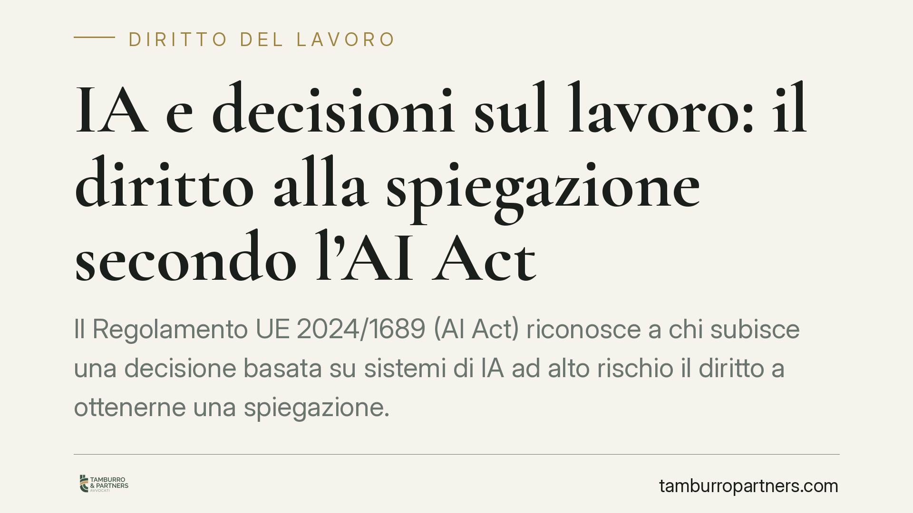

IA e decisioni sul lavoro: il diritto alla spiegazione secondo l'AI Act
Il Regolamento UE 2024/1689 (AI Act) riconosce a chi subisce una decisione basata su sistemi di IA ad alto rischio il diritto a ottenerne una spiegazione. Per i datori di lavoro che usano l'IA in selezione, valutazione o gestione del personale, significa nuovi obblighi di trasparenza e documentazione, dentro una timeline di applicazione scaglionata e un sistema sanzionatorio articolato.

Il contesto
L'uso di sistemi di intelligenza artificiale nei processi HR non è più ipotesi di scuola: screening dei curricula, scoring dei candidati, monitoraggio della produttività, supporto alle decisioni su promozioni o cessazioni. Quando questi strumenti incidono su persone, il Regolamento UE 2024/1689 (AI Act) impone regole precise.
Il punto che riguarda più da vicino i datori di lavoro è il cosiddetto diritto alla spiegazione: chi subisce una decisione individuale presa con l'ausilio di un sistema ad alto rischio può chiedere di comprenderne il ruolo nella procedura e gli elementi principali che l'hanno determinata.
Inquadramento normativo
Il diritto alla spiegazione delle decisioni individuali è previsto dall'articolo 86 del Regolamento UE 2024/1689. Riguarda le decisioni che producono effetti giuridici o incidono in modo significativo sulla persona e che sono adottate sulla base dell'output di un sistema di IA classificato ad alto rischio ai sensi dell'Allegato III. Tra le aree ad alto rischio l'Allegato III include espressamente l'occupazione, la gestione dei lavoratori e l'accesso al lavoro autonomo.
L'AI Act non entra in vigore tutto insieme: la sua applicazione è scaglionata nel tempo. I divieti sulle pratiche vietate si applicano per primi; gli obblighi relativi ai sistemi ad alto rischio dell'Allegato III seguono in un momento successivo, secondo le scadenze fissate dal Regolamento. È quindi opportuno verificare, caso per caso, la decorrenza applicabile al sistema utilizzato.
Sul piano nazionale è in corso l'adozione di un provvedimento di adeguamento all'AI Act, che definirà autorità competenti e profili attuativi. Allo stato non è disponibile un testo definitivo con estremi certi: ne seguiremo la pubblicazione.
Quanto alle sanzioni, l'AI Act distingue i massimali. Le soglie più elevate — fino a 35 milioni di euro o al 7% del fatturato mondiale — colpiscono le pratiche vietate (art. 5, regime sanzionatorio dell'art. 99). Le violazioni degli obblighi relativi ai sistemi ad alto rischio e agli operatori, inclusi i deployer, sono soggette a tetti inferiori, tipicamente fino a 15 milioni di euro o al 3% del fatturato. È un sistema graduato: la mera violazione del diritto alla spiegazione non comporta automaticamente la sanzione massima.
Il datore di lavoro come deployer
L'AI Act distingue il fornitore del sistema dal deployer, cioè chi lo utilizza in concreto. Il datore di lavoro che adotta un sistema di IA nei processi HR assume il ruolo di deployer, con obblighi propri: sorveglianza umana, uso conforme alle istruzioni del fornitore, informazione dei lavoratori interessati. La responsabilità è dunque distribuita: non si esaurisce in capo a chi ha sviluppato il software.
Il quadro va letto insieme ad altre norme già vigenti. L'art. 22 del GDPR limita le decisioni basate unicamente su trattamenti automatizzati che producano effetti significativi sulla persona. L'art. 1-bis del D.lgs. 152/1997 impone al datore obblighi informativi specifici verso i lavoratori sull'uso di sistemi decisionali o di monitoraggio automatizzati. E l'art. 4 dello Statuto dei lavoratori (L. 300/1970) continua a regolare i controlli a distanza, condizionando l'impiego di strumenti che raccolgano dati sull'attività dei dipendenti.
Implicazioni pratiche
Per un'azienda che usa l'IA nella gestione del personale cambiano due cose. La prima è la trasparenza: occorre essere in grado di ricostruire e spiegare come un sistema ha contribuito a una decisione. La seconda è il contenzioso: in caso di mancata assunzione o di licenziamento, il lavoratore potrà contestare non solo il merito, ma anche l'opacità del processo. Una decisione non spiegabile diventa una decisione più difficile da difendere.
Cosa fare in concreto
- Mappare tutti i sistemi di IA impiegati nei processi HR, classificandoli rispetto all'Allegato III dell'AI Act.
- Raccogliere la documentazione dei fornitori: istruzioni d'uso, limiti del sistema, informazioni sulla sorveglianza umana e sulla logica di funzionamento.
- Definire una procedura di risposta alle richieste di spiegazione dei lavoratori, con tempi e responsabili individuati.
- Aggiornare le informative ex art. 1-bis D.lgs. 152/1997 e la documentazione privacy, verificando la coerenza con l'art. 22 GDPR e l'art. 4 dello Statuto.
- Formare il personale HR sul funzionamento degli strumenti e sul perimetro della sorveglianza umana richiesta.
---
Contributo informativo a cura di Tamburro & Partners - Avv. Giuseppe Tamburro. Non costituisce parere legale.
Ogni storia di lavoro ha i suoi tempi.
Se gestisci HR e vuoi un confronto su contenzioso, ispezioni o licenziamenti, scrivi allo studio. Ti rispondiamo entro un giorno lavorativo.